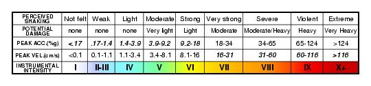

|
Note: For more detailed information see the online ShakeMap Manual and the Publications on ShakeMap
A ShakeMap is a representation of ground shaking produced by an earthquake. The information it presents is different from the earthquake magnitude and epicenter that are released after an earthquake because ShakeMap focuses on the ground shaking produced by the earthquake, rather than the parameters describing the earthquake source. So, while an earthquake has one magnitude and one epicenter, it produces a range of ground shaking levels at sites throughout the region depending on distance from the earthquake, the rock and soil conditions at sites, and variations in the propagation of seismic waves from the earthquake due to complexities in the structure of the Earth's crust.
Part of the strategy for generating rapid-response ground motion maps is to determine the best format for reliable presentation of the maps given the diverse audience, which includes scientists, businesses, emergency response agencies, media, and the general public. In an effort to simplify and maximize the flow of information to the public, we have developed a means of generating not only peak ground acceleration and velocity maps, but also an instrumentally-derived, estimated Modified Mercalli Intensity map. This map makes it easier to relate the recorded ground motions to the expected felt and damage distribution. The Instrumental Intensity map is based on a combined regression of recorded peak acceleration and velocity amplitudes. (see Intensity Maps)
With the " target="_top"> current station distribution, data gaps are common, particularly for smaller events and events near or outside the edge of the network. In order to stabilize contouring and minimize the misrepresentation of the ground motion pattern due to data gaps, we augment the data with predicted values in areas without data. Given the epicenter and magnitude, peak motion amplitudes in spare regions are estimated from the Joyner, Boore, and Fumal (1997), and Joyner and Boore (1988) attenuation curves. As the real-time station density increases, this difficulty should be alleviated. Small open circles represent "phantom" grid stations where strong motion values were estimated.
Note: ShakeMaps are generated automatically following moderate and large earthquakes. These are preliminary ground shaking maps, normally posted within several minutes of the earthquake origin time. The acceleration and velocity values are raw and are at least initially, NOT checked by humans. Further, since ground motions and intensities typically can vary significantly over small distances, these maps are only APPROXIMATE. At small scales, they should be considered unreliable. Finally, the input data is raw and unchecked, and may contain errors. (See Disclaimer)
When viewing the peak ground motion maps using a Javascript-enabled browser, additional information about the earthquake epicenter and recording seismic stations can be viewed. A brief summary line is displayed when the mouse pointer is over the epicenter symbol or a station symbol. If the symbol is clicked, a small window with a table of information will be opened. This window can be moved to a preferred location, and clicking on the tab bar to see another map will close the current information window.
The instrumental intensity map does not show station symbols and does not have the popup information window. The legend bar at the bottom explains the colors (and see Intensity Maps below).
In the popup window, the earthquake information includes the event date, time, location coordinates in degrees latitude and longitude, and hypocentral depth in kilometers.
The station information includes the station code and name, the agency that manages the station, the station location coordinates in degrees latitude and longitude, and the peak acceleration and velocity values for each component of ground motion (when available). When the peak ground motion maps are made, the value from the peak horizontal component of ground motion is used as the value for the station. This value is highlighted in bold in the station information.
Components from many stations are defined by three letter codes. The last letter indicates the orientation (Z = vertical, N = horizontal north, E = horizontal east). The first two letters indicate the instrument class:
| Code | Description |
|---|---|
| VL | low gain channels on the analog network |
| VH | high gain channels on the analog network |
| AS | FBA's on the analog network |
| HL | FBA's on the digital network |
| HN | FBA's on the digital network |
| BH | broadband data streams |
| HH | broadband data streams |
FBA's (force balance accelerometers) are designed to record extremely large ground motions and can accurately record waves from very large earthquakes. However, ground motions from small and moderate earthquakes are often too small to trigger these instruments or rise above instrument noise. On the other hand, Broadband seismic sensors can record extremely small ground motions and accurately record waves from earthquakes that range from very small up to moderately large. A number of stations have both FBA and broadband sensors. For ShakeMap, the network tends to emphasize FBA recordings for large ground motions and broadband recordings for small ground motions.
Occassionally, station channels will be flagged due to problems with the station or possibly anomalous peak values. In this case, the popup window of station information will indicate the flagging with the following codes:
| Code | Description |
|---|---|
| M | Manually flagged |
| T | Outlier |
| G | Glitch (clipped or below noise) |
| I | Incomplete time series |
| N | Not in list of known stations |
Peak horizontal acceleration at each station is contoured in units of percent-g (where g = acceleration due to the force of gravity = 981 cm/s/s). The peak values of the vertical components are not used in the construction of the maps because the regression relationships used to fill in data gaps between stations are based on horizontal peak amplitudes. The contour interval varies greatly and is based on the maximum recorded value over the network for each event.
For moderate to large events, the pattern of peak ground acceleration is typically quite complicated, with extreme variability over distances of a few km. This is attributed to the small scale geological differences near the sites that can significantly change the high-frequency acceleration amplitude and waveform character. Although distance to the causative fault clearly dominates the pattern, there are often exceptions, due to local amplification. Although, this makes interpolation of ground motions at one site to a nearby neighbor risky, the peak acceleration pattern usually reflects what is felt from low levels of shaking up to to moderate levels of damage.
Peak velocity values are contoured for the maximum horizontal velocity (in cm/sec) at each station. As with the acceleration maps, the vertical component amplitudes are disregarded for consistency with the regression relationships used to estimate values in gaps in the station distribution. Typically, for moderate to large events, the pattern of peak ground velocity reflects the pattern of the earthquake faulting geometry, with largest amplitudes in the near-source region, and in the direction of rupture (directivity). Differences between rock and soil sites are apparent, but the overall pattern is normally simpler than the peak acceleration pattern. Severe damage, and damage to flexible structures is best related to ground velocity. For reference, the largest recorded ground velocity (to date) was made at the Rinaldi Receiving Station from the Northridge (Magnitude 6.7), topping out at 183 cm/sec.
Following earthquakes larger than magnitude 5.5, spectral response maps are made. Response spectra portray the response of a damped, single-degree-of-freedom oscillator to the recorded ground motions. This data representation is useful for engineers determining how a structure will react to ground motions. The response is calculated for a range of periods. Within that range, the Uniform Building Code (UBC) refers to particular reference periods that help define the shape of the "design spectra" that reflects the building code.
ShakeMap spectral response maps are made for the response at three UBC reference periods: 0.3, 1.0, and 3.0 seconds. For each station, the value used is the peak horizontal value of 5% critically damped pseudo-acceleration.
As an effort to simplify and maximize the flow of information to the public, we have developed a means of generating estimated Modified Mercalli Intensity maps based on instrumental ground motion recordings. This "Instrumental Intensity" is based on a combined regression of peak acceleration and velocity amplitudes vs. observed intensity for eight significant California earthquakes (1971 San Fernando, 1979 Imperial Valley, 1986 North Palm Springs, 1987 Whittier, 1989 Loma Preita, 1991 Sierra Madre, 1992 Landers, and 1994 Northridge).
From the comparison with observed intensity maps, we find that a regression based on peak velocity for intensity > VII and on peak acceleration for intensity < VII is most suitable. This is consistent with the notion that low intensities are determined by felt accounts (sensitive to acceleration). Moderate damage, at intensity VI-VII, typically occurs in rigid structures (masonry walls, chimneys, etc.) which also are sensitive to high-frequency (acceleration) ground motions. As damage levels increase, damage also occurs in flexible structures, for which damage is proportional to the ground velocity, not acceleration. By relating recorded ground motions to Modified Mercalli intensities, we can now estimate shaking intensities within a few minutes of the event based on the recorded peak motions made at seismic stations.
A very good descriptive table of Modified Mercalli Intensity is available from ABAG (Association of Bay Area Governments). A table of intensity descriptions with the corresponding peak acceleration and velocity values used in the ShakeMaps is given below.
|  |
ShakeMaps are computed as the uncertainty-weighted combination of ground motion amplitudes from a Ground Motion Prediction Equation (GMPE), seismic data, and (optionally) reports of macroseismic intensity. This weighted-averaging process allows us to compute an uncertainty at each grid point in a ShakeMap. Since the GMPE also provides an estimate of ground motion uncertainty at each point, we can compute the ratio of the final ShakeMap uncertainty to the GMPE uncertainty. This ratio lets us know at each grid point if the ShakeMap is more or less uncertain than a purely predictive map generated by the GMPE.
We utilize the uncertainty ratio to produce a graded map of uncertainty. Where the ratio is 1.0 (meaning the ShakeMap is purely predictive), the map is colored white. Where the ratio is greater than 1.0 (meaning that the ShakeMap uncertainty is high because of unknown fault geometry) the map shades toward dark red, and where the uncertainty is less than 1.0 (because the presence of data decreases the uncertainty) the map shades toward dark blue. These maps provide a quick visual summary of quality of the ground motion estimates over the area of interest. ShakeMaps are also given a letter grade, based on the mean uncertainty ratio within the area of the MMI 6 contour (on the theory that this is the area most important to accurately represent). A ratio of 1.0 is given a grade of "C." Maps with mean ratios greater than 1.0 get grades of "D" or "F." Ratios less than 1.0 earn grades of "B" or "A." If the map does not contain areas of MMI >= 6, no grade is assigned.
Earthquake Scenarios describe the expected ground motions and effects of specific hypothetical large earthquakes. In planning and coordinating emergency response, utilities, emergency responders, and other agencies are best served by conducting training exercises based on realistic earthquake situations, ones that they are most likely to face. Scenario earthquakes can fill this role; they can be generated for any potential hypothetical future or past historic earthquake by the following steps.
First, assume a particular fault or fault segment will rupture over a certain length relying on consensus-based information about the potential behavior of the fault. For historic events, the actual rupture dimensions may be constrained based on existing observations or models. Second, estimate ground motions at all locations in a chosen region surrounding the causative fault.
These earthquake scenarios are not earthquake predictions. That is, no one knows in advance when or how large a future earthquake will be. However, if we make assumptions about the size and location of a hypothetical future earthquake, we can make a reasonable prediction of the effects of the assumed earthquake, particularly the way in which the ground will shake. This knowledge of the potential shaking effects is the main benefit of the earthquake scenario for planning and preparedness purposes.
Choosing An Appropriate Earthquake Scenario
San Francisco Bay Area
The scenario earthquakes given on the Northern California ShakeMap web page represent 34 possible future earthquakes in the greater San Francisco Bay area as determined by the USGS-led Working Group on California Earthquake Probabilities. This Working Group (WG02) concluded that the likelihood of one or more large (M>=6.7) earthquakes in the San Francisco Bay region in the next 30 years is 62% [with an associated 95% confidence bound of 37-87%]. This regional result combines the probabilities of earthquakes on each of seven characterized fault systems as well as in the background. As part of the Working Group process, the seven main Bay Area faults were subdivided into 18 individual fault segments. These fault segments were considered the basic building block for each fault; i.e., the shortest section considered capable of repeatedly rupturing to produce large earthquakes. Each fault was divided into as many as four, non-overlapping segments by evaluating data from past earthquakes as well as the role of structural changes along the faults, such as bends, intersections, gaps, and major changes in rock types. Figure 1 shows the characterized faults and segment boundaries.
The Working Group allowed for the possibility of either single segment or multi-segment earthquakes on the seven fault systems. Each possible combination of segments was called a rupture source and each rupture source represents a possible future ”scenario” earthquake. WG02 assigned weights to the likelihood of occurrence of all combinations of the possible rupture sources for each fault system. The resulting rupture sources—34 in all—along with their mean magnitude, probability of occurring in the next 30 years, and the associated uncertainities in the probabilities are listed in Table 1.
These scenario ShakeMaps graphically illustrate the strength and regional extent of shaking that can be expected from a specific future Bay Area earthquakes. It is important to note that the predicted values are median estimates: when a large earthquake actually occurs, the ground shaking may exceed these estimates in some places and will be lower in others.
Table 1.|
Scenario Events |
Magnitude |
Mean |
30-year Probability |
|
individual rupture sources, given as a segment |
|
Value |
95% confidence bounds |
|
or combination of segments (WG02 abbreviation) |
|
|
[ 2.5% - 97.5% ] |
|
San Andreas Fault (SAF) |
|
|
|
|
San Andreas Santa Cruz Mtns. (SAS) |
7.03 |
0.026 |
[ 0.000 – 0.108 ] |
|
San Andreas Peninsula: possible repeat of 1838 earthquake (SAP) |
7.15 |
0.044 |
[ 0.000 – 0.172 ] |
|
San Andreas North Coast (SAN) |
7.45 |
0.009 |
[ 0.000 – 0.037 ] |
|
San Andreas Offshore (SAO) |
7.29 |
0.009 |
[ 0.000 – 0.043 ] |
|
Santa Cruz Mtns. + Peninsula (SAS+SAP) |
7.42 |
0.035 |
[ 0.001 – 0.102 ] |
|
North Coast + Offshore (SAN+SAO) |
7.70 |
0.034 |
[ 0.001 – 0.106 ] |
|
Santa Cruz +Peninsula+N. Coast (SAS+SAP+SAN) |
7.76 |
0.001 |
[ 0.000 – 0.003 ] |
|
Peninsula+N. Coast+Offshore (SAP+SAN+SAO) |
7.83 |
0.002 |
[ 0.000 – 0.011 ] |
|
All 4 segments: possible repeat of 1906 earthquake (SAS+SAP+SAN+SAO) |
7.90 |
0.047 |
[ 0.003 – 0.138 ] |
|
|
|
|
|
|
Hayward-Rodgers Creek Fault (HRC) |
|
|
|
|
Southern Hayward: possible repeat of 1868 earthquake (HS) |
6.67 |
0.113 |
[ 0.022 – 0.319 ] |
|
Northern Hayward (HN) |
6.49 |
0.123 |
[ 0.023 – 0.360 ] |
|
Southern Hayward + Northern Hayward (HS+HN) |
6.91 |
0.085 |
[ 0.019 – 0.232 ] |
|
Rodgers Creek (RC) |
6.98 |
0.152 |
[ 0.041 – 0.414 ] |
|
Northern Hayward+Rodgers Creek (HN+RC) |
7.11 |
0.018 |
[ 0.000 – 0.066 ] |
|
Southern Hayward+Northern Hayward+Rodgers Creek (HS+HN+RC) |
7.26 |
0.010 |
[ 0.010 – 0.033 ] |
|
|
|
|
|
|
Calaveras Fault (CLV) |
|
|
|
|
Southern Calaveras (CS) |
5.79 |
0.213 |
[ 0.000 – 0.538 ] |
|
Central Calaveras (CC) |
6.23 |
0.138 |
[ 0.039 – 0.297 ] |
|
Southern Calaveras+Central Calaveras (CS+CC) |
6.36 |
0.050 |
[ 0.000 – 0.203 ] |
|
Northern Calaveras (CN) |
6.78 |
0.124 |
[ 0.030 – 0.356 ] |
|
Central Calaveras+Northern Calaveras (CC+CN) |
6.90 |
0.003 |
[ 0.000 – 0.036 ] |
|
Southern+Central+Northern Calaveras (CS+CC+CN) |
6.93 |
0.020 |
[ 0.000 – 0.079 ] |
|
|
|
|
|
|
Concord-Green Valley Fault (CGV) |
|
|
|
|
Concord (CON) |
6.25 |
0.050 |
[ 0.003 – 0.182 ] |
|
Southern Green Valley (GVS) |
6.24 |
0.023 |
[ 0.001 – 0.087 ] |
|
Concord+Southern Green Valley (CON+GVS) |
6.58 |
0.016 |
[ 0.001 – 0.067 ] |
|
Northern Green Valley (GVN) |
6.02 |
0.061 |
[ 0.004 – 0.219 ] |
|
Southern+Northern Green Valley (GVS+GVN) |
6.48 |
0.032 |
[ 0.002 – 0.115 ] |
|
Concord+Southern+Northern Green Valley (CON+GVS+GVN) |
6.71 |
0.060 |
[ 0.007 – 0.222 ] |
|
|
|
|
|
|
San Gregorio Fault (SGF) |
|
|
|
|
Southern San Gregorio (SGS) |
7.0 |
0.023 |
[ 0.000 – 0.115 ] |
|
Northern San Gregorio (SGN) |
7.2 |
0.039 |
[ 0.000 – 0.175 ] |
|
Southern+Northern San Gregorio (SGS+SGN) |
7.4 |
0.026 |
[ 0.000 – 0.101 ] |
|
|
|
|
|
|
Greenville Fault (GNV) |
|
|
|
|
Southern Greenville (GS) |
6.6 |
0.031 |
[ 0.000 – 0.107 ] |
|
Northern Greenville (GN) |
6.7 |
0.029 |
[ 0.000 – 0.098 ] |
|
Southern+Northern Greenville (GS+GN) |
6.9 |
0.015 |
[ 0.001 – 0.047 ] |
|
|
|
|
|
|
Mt. Diablo Fault (MTD) |
|
|
|
|
Single-segment fault (MTD) |
6.65 |
0.075 |
[ 0.005 – 0.241 ] |
Elsewhere in Califoria
In California, the California Geological Survey (CGS) and the U.S. Geological Survey (USGS) have evaluated the probabilistic hazard from active faults in the state as part of the Probabilistic Seismic Hazard Assessment For The State of California described by Peterson et al. (1996) and the National Seismic Hazard Mapping Project described by Frankel et al. (1996). From these maps it is possible to prioritize the best scenario earthquakes to be used in planning exercises by considering the most likely candidate earthquake fault first, followed by the next likely, and so on. Such an analysis is easily accomplished by hazard deaggregation, in which the contributions of individual earthquakes to the total seismic hazard their probability of occurrence and the severity of the ground motions are ranked in order. U sing the individual components ("deaggregations") of these hazard maps, a user can properly select the appropriate scenarios given their location, regional extent, and specific planning requirements. Currently, the ShakeMap scenario events come directly out of the CGS catalog of fault source parameters that make up the statewide probabilistic seismic hazard assessment. Users interested in specific scenarios for planning purposes are encouraged to make such a request by filling out a ShakeMap Comment Form.
Estimating Ground Motions for Scenario Earthquake ShakeMaps. At present, ground motions are estimated using an empirical attenuation relationship, which is a predictive relationship that allows the estimation of the peak ground motions at a given distance and for an assumed magnitude. Thus, ground motions are estimated for a given magnitude earthquake, and at a particular distance from the assumed fault, in a manner consistent with recordings of past earthquakes under similar conditions. For ShakeMap, we use the relationship of Boore et al. (1997) for peak and spectral acceleration, and we use Joyner and Boore's (1988) relationship for peak velocity. We use these predictive relationships to estimate peak ground motions on rock sites, and then correct the amplitude at that location based on the site soil conditions as we do in the general ShakeMap interpolation scheme. Site conditions come directly from the Statewide Site Conditions Map for California (Wills et al., 2000) and we correct for site amplification with the amplitude and frequency-dependent factors determined by Borcherdt (1994).
Attributes and Limitations of Current Maps. Our approach is simple and approximate. We account for fault finiteness by measuring the distance to the surface projection of the fault location (Joyner and Boore's distance definition), but we do not consider the direction of rupture nor do we modify the peak motions by a directivity term. With this approach, the location of the earthquake epicenter does not have any effect on the resulting ground motions; only the location and dimensions of the fault matter. If we were to add directivity to the calculations, than different choices of epicentral location would result in significantly difference motions for the same magnitude earthquake and fault segment. Rather, our approach here is to show the average effect since it is difficult to show results for every possible epicentral location.
Our empirical predictive approach also only gives average peak ground motions values so it does not account for all the expected variability in motions, other than the aforementioned site amplification variations. Actual ground motions show significant variability for a given distance, magnitude, and site condition and, hence, the scenario ground motions are more uniform than would be expected for an actual earthquake. The true variations are partially attributable to 2D and 3D wave propagation, path effects (such as basin edge amplification and focusing), differences in motions among earthquakes of the same magnitude, and complex site effects not accounted for by our method.
Uses. Earthquake scenarios are used heavily in emergency response planning. Primary users for response planning include city, county, state and federal government agencies (e.g., the California Office of Emergency Services, FEMA, the Army Corp of Engineers), emergency response planners and managers for utilities, businesses, and other large organizations. Scenarios are also used for loss-estimation by utilities, governments, and industry.
Scenarios are of fundamental interest to the community and scientific audiences interested in the nature of the ground shaking likely experienced in past earthquakes as well as the possible effects due to rupture on known faults in the future.
In addition, more detailed and careful analysis of the ground motion time histories (seismograms) produced by such scenario earthquakes is highly beneficial for earthquake engineering considerations. Engineers require site-specific ground motions for detailed structural response analysis of existing structures and future structures designed around specified performance levels. In the future, with these scenarios we will also provide synthetic time histories of strong ground motions that include rupture directivity effects.
Future Scientific Advances. While current earthquake modeling techniques are sufficient for providing useful motion time histories and scenario ShakeMaps based on empirical means (e.g., ground motion attenuation relations), substantial improvement will require developing cost-effective numerical tools for proper theoretical inclusion of known complex ground motion effects. These efforts are underway and must continue in order to obtain site, basin and deeper crustal structure, to characterize and test 3D earth models (including attenuation and nonlinearity), and to improve numerical wave propagation methods to obtain useful, site-specific, ground motion time histories.
Please use the comment form for
questions, comments, or suggestions
Maintained by ShakeMap Working Group
Page last modified 2/4/2005